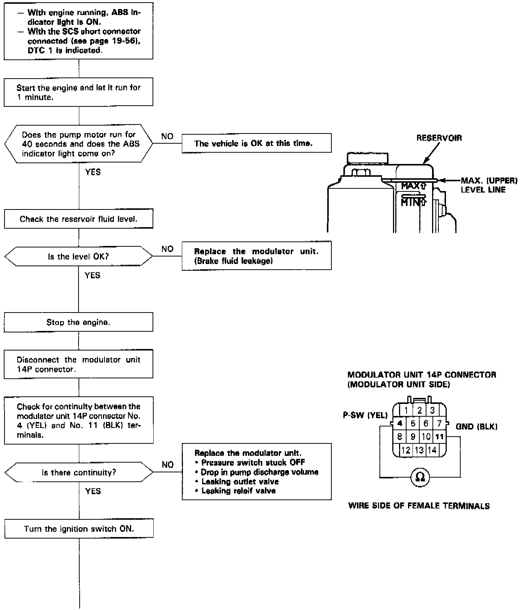
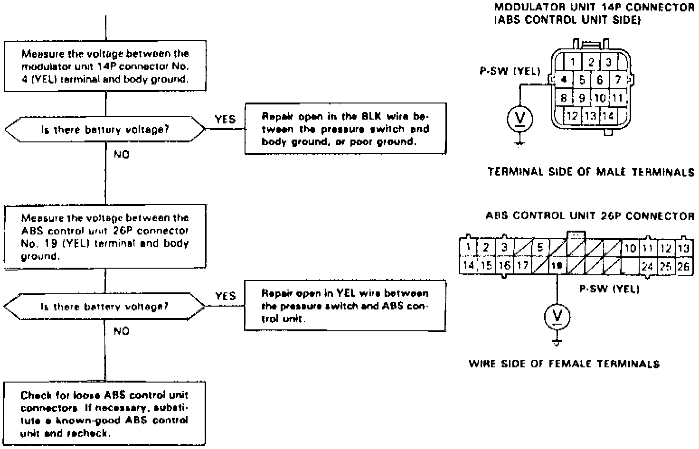

DTC 1

Fig. 27 Code 1 Pump Motor Over-Run (Part 2 Of 2):

Diagnostic Trouble Code (DTC) 1: ASS Pump Motor Over-run
NOTE: The ABS indicator light comes on twice; once for two seconds during the bulb check, then again, indicating DTC 1. The ABS control unit monitors the pump motor relay drive signal during the initial diagnosis and individual diagnosis when the ABS is not functioning.
When the ABS control unit detects the drive signal for 40 seconds, it turns the pump motor relay off and keeps the ABS indicator light on. When the ABS control unit detects the drive signal for 40 seconds after the ABS indicator light went off, the control unit turns the ABS indicator light on again.
Possible causes:
- Air mixed in the ABS brake fluid
- Pressure switch stuck OFF
- Open circuit between the pressure switch and ABS control unit
- Open circuit in the P-SW circuit between the pressure switch and body ground, or a poor ground
- Drop in pump discharge volume
- Leaking outlet valve
- Leaking relief valve
- Brake fluid leakage on the ABS operation system
- Faulty ABS control unit